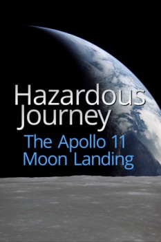

Country:Canada, 24 minutes
Spoken languages:English
Genres:Documentary, History
Director(s):Jon Dearden
Writer(s):Jon Dearden
Video Codec:Unknown
Number: 2827

Certification:
Storyline:
July 1969. Astronauts Neil Armstrong and Buzz Aldrin are 240,000 miles from earth facing the most hazardous venture in the history of space flight; the first human landing on another world. They'll succeed, abort, or die in the attempt.
Cast:
Neil Armstrong (as Self (archive footage)), Michael Collins (as Self (archive footage)), Buzz Aldrin (as Self (archive footage)), Gene Kranz (as Self (archive footage)), Charlie Duke (as Self (archive footage))
Medium: Media file,
Location: D:\Pilot License Material\DC3\11 Landing.mp4
Loaned: No
Aspect ratio: Unknown